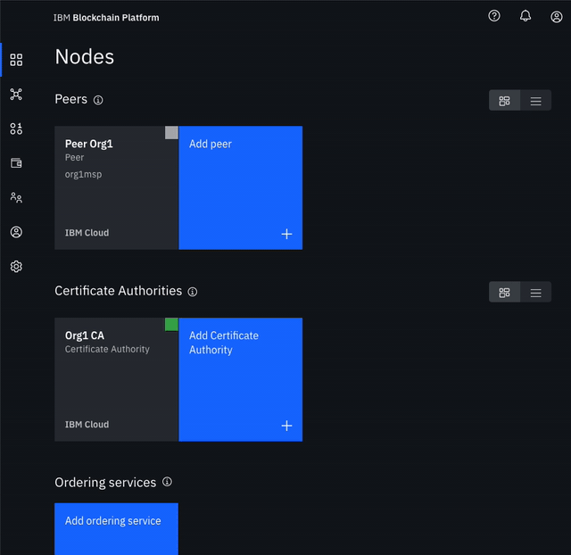
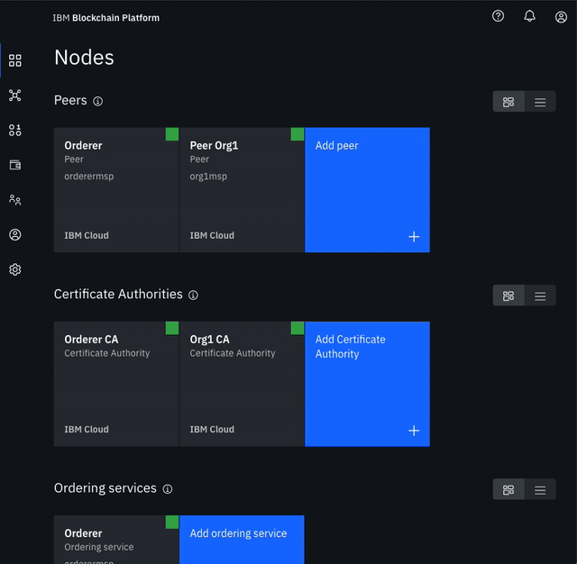

Lab 4b: FabCar Blockchain Sample - Build a Network (2/3)
Create the node that orders transactions
- Create your orderer organization CA
- In Nodes Click Add Certificate Authority.
- Click IBM Cloud under Create Certificate Authority and Next.
- Give it a unique Display name of
Orderer CA. - Specify an Admin ID of
adminand Admin Secret ofadminpw.

- Use your CA to register orderer and orderer admin identities
- In the Nodes tab, select the Orderer CA Certificate Authority that we created.
- First, we will register an admin for our organization. Click on the Register User button. Give an Enroll ID of
ordereradmin, and Enroll Secret ofordereradminpw. Click Next. Set the Type for this identity asclientand select from any of the affiliated organizations from the drop-down list. We will leave the Maximum enrollments and Add Attributes fields blank. - We will repeat the process to create an identity of the orderer. Click on the Register User button. Give an Enroll ID of
orderer1, and Enroll Secret oforderer1pw. Click Next. Set the Type for this identity aspeerand select from any of the affiliated organizations from the drop-down list. We will leave the Maximum enrollments and Add Attributes fields blank.

- Create the orderer organization MSP definition
- Navigate to the Organizations tab in the left navigation and click Create MSP definition.
- Enter the MSP Display name as
Orderer MSPand an MSP ID oforderermsp. - Under Root Certificate Authority details, specify the peer CA that we created
Orderer CAas the root CA for the organization. - Give the Enroll ID and Enroll secret for your organization admin,
ordereradminandordereradminpw. Then, give the Identity name,Orderer Admin. - Click the Generate button to enroll this identity as the admin of your organization and export the identity to the wallet. Click Export to export the admin certificates to your file system. Finally click Create MSP definition.

- Create an orderer
- On the Nodes page, click Add orderering service.
- Click IBM Cloud and proceed with Next.
- Give your peer a Display name of
Orderer. - On the next screen, select
Orderer CAas your Certificate Authority. Then, give the Enroll ID and Enroll secret for the peer identity that you created for your orderer,orderer1, andorderer1pw. Then, select the Administrator Certificate (from MSP),Orderer MSP, from the drop-down list and click Next. - Give the TLS Enroll ID,
admin, and TLS Enroll secret,adminpw, the same values are the Enroll ID and Enroll secret that you gave when creating the CA. Leave the TLS CSR hostname blank. - The last side panel will ask to Associate an identity and make it the admin of your peer. Select your peer admin identity
Orderer Admin. - Review the summary and click Add organization.

- Add organization as Consortium Member on the orderer to transact
- Navigate to the Nodes tab, and click on the Orderer that we created.
- Under Consortium Members, click Add organization.
- From the drop-down list, select
Org1 MSP, as this is the MSP that represents the peer's organization org1. - Click Add organization.
